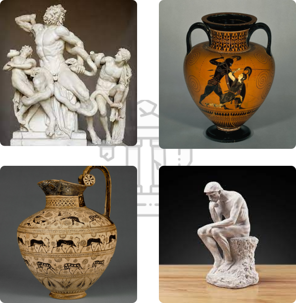
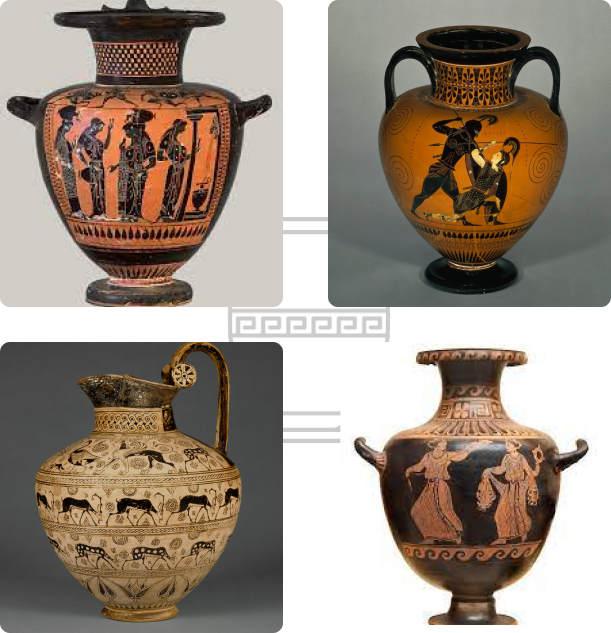

Acervo
Em Trojan contamos com vasos cerâmicos, adornados com padrões intrincados e cenas mitológicas, contam histórias silenciosas de uma era rica em cultura. Cada pincelada em nossas pinturas transporta você para o cotidiano da Grécia Antiga, enquanto nossas estátuas esculpidas em mármore e bronze capturam a beleza eterna dos deuses e heróis gregos.
Estátuas
As estátuas da Grécia Antiga são notáveis pela sua perfeição anatômica e equilíbrio estético. Esculpidas em mármore e bronze, retratam divindades e atletas com realismo e idealismo, transmitindo emoções através de expressões faciais e poses. Estas esculturas desempenharam um papel crucial na religião e sociedade gregas, e o seu legado perdura na história da arte, influenciando gerações subsequentes de artistas.

Vasos
Os vasos da Grécia Antiga, em cerâmica, destacam-se por sua excelência artística, combinando realismo e simbolismo em representações de cotidiano, mitologia e rituais religiosos. Além de sua função prática, desempenharam um papel vital na religião e sociedade gregas, transmitindo narrativas visuais profundas. Seu legado perdura na história da arte, influenciando artistas subsequentes com sua sofisticação técnica e expressividade narrativa.